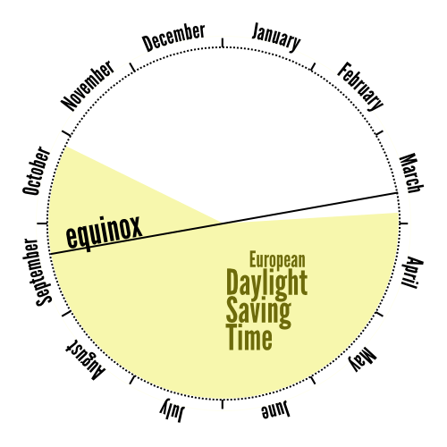

Daylight Saving Time
The European one. It’s wrong.

Central European Summer Time starts on last Sunday of March and ends on last Sunday of October. I never paid much attention to it, but always assumed that the start and end of daylight saving time is somehow related to equinox.
Now I found out the longest night of the year happens two months after switching to winter time and three months before switching back to summer time. Why?
To correct the assymetry, I demand for CEST to start one month earlier, on last Sunday of February. I’d been planning to visit Brussels anyway.
PS: Infographics are cool. This post was an excuse to try creating one myself.
One thought on “Daylight Saving Time”
toxygen 2011-07-29
http://acidcow.com/pics/22463-everything-you-need-to-know-about-boobs.html
so much for your infographics :)
Add your comment — How does this work?